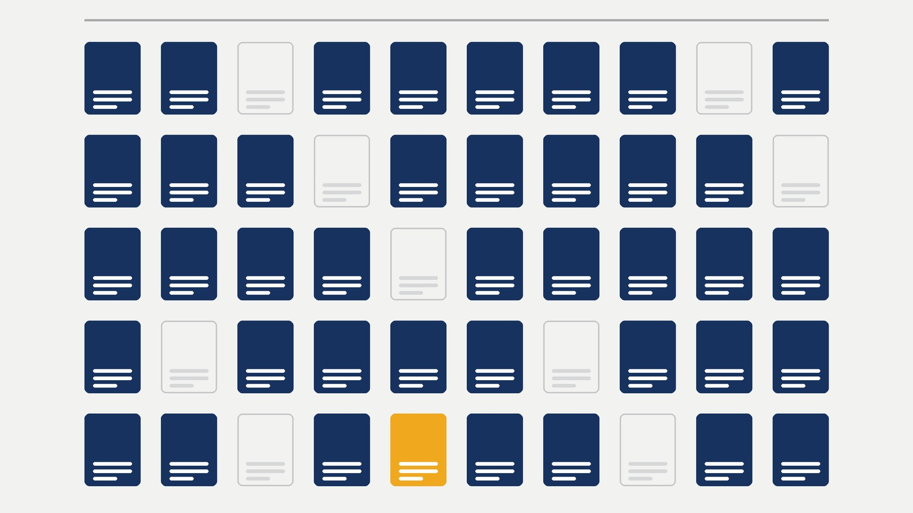
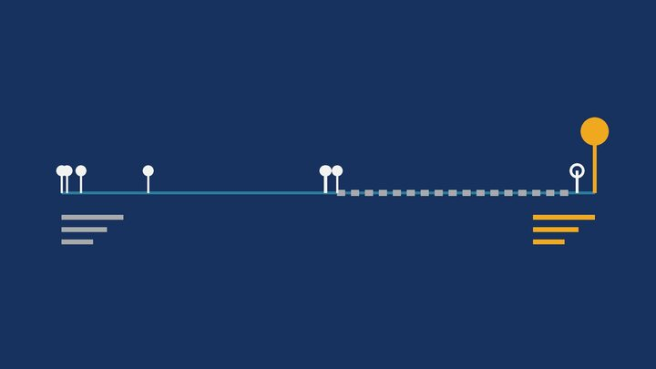

Itapema · Poder Público
Itapema · Poder PúblicoItapema vota nesta terça a LDO de 2027, com R$ 954,3 milhões de receita prevista, R$ 10 milhões acima do que a Prefeitura já espera arrecadar neste ano
É a votação que trancou a pauta da mesma sessão de terça.
A Câmara de Itapema abriu a sessão desta terça lendo dois ofícios do vereador João Vitor de Souza (PL) que pedem a retirada de 12 proposições dele mesmo. Fomos abrir a ficha de cada uma no sistema da Casa. As 12 estavam paradas na mesma comissão, a de Legislação, Justiça e Redação Final, nenhuma delas tinha parecer registrado, e a mais antiga esperava desde junho de 2025, 476 dias. Depois somamos a legislatura inteira, vereador por vereador: foram 1.384 projetos de lei apresentados desde 2025 e 248 retirados pelos próprios autores, quase um de cada seis. Os ofícios dizem o motivo da retirada, que é "promover adequações em sua redação", e um dos textos já voltou reescrito 15 dias depois.
Em 30 segundos · Modo de Leitura, formato original Santa Informa
A Câmara de Itapema se reuniu nesta terça, 13 de outubro.
Foi a 33ª sessão ordinária do ano.
No expediente entraram dois ofícios.
Os dois são do vereador João Vitor de Souza, do PL.
Nos dois ele pede para retirar projetos dele.
Somados, são 12 projetos.
Onze são projetos de lei comum.
Um é projeto de lei complementar.
Fomos abrir a ficha de cada um.
As 12 estavam na mesma comissão.
É a de Legislação, Justiça e Redação Final.
Nenhuma das 12 tinha parecer registrado.
O sistema marca "Data do Parecer: não registrada".
A mais antiga é o PL 246/2025.
Ele foi à comissão em 18 de junho de 2025.
Ficou lá 476 dias, conta nossa.
Tratava de ruído perto de pessoa com autismo.
Somando tudo, são 14 proposições arquivadas.
Doze saíram agora e duas em 28 de setembro.
A soma da espera dá 5.214 dias.
A média é de 372 dias cada uma.
Os ofícios dizem o motivo.
É "promover adequações em sua redação".
Eles citam os artigos 123 e 132 do regimento.
Retirar projeto próprio é direito do autor.
E um texto já voltou.
O Código do autismo saiu como PLC 07/2026.
Voltou como PL 630/2026 na terça.
Entre uma coisa e outra, 15 dias.
Na mesma noite entraram 16 projetos novos.
São os de número 627 a 642.
Quatro deles são do mesmo vereador.
Oito são de Yagan Dadam, também do PL.
Depois somamos a legislatura inteira.
Os 15 vereadores apresentaram 1.384 projetos.
Desses, 248 foram retirados pelo autor.
Dá 17,9%, quase um de cada seis.
E 390 viraram lei sancionada.
João Vitor tem 227 projetos e 87 retirados.
É 38,3%, a maior fatia da Casa.
Ele também é o segundo que mais apresenta.
E tem 61 leis sancionadas.
Quem mais apresenta é Yagan Dadam.
São 574 projetos e só 46 retirados.
A pauta da terça estava trancada.
Com a LDO em votação, nada mais é votado.
Por isso os 16 novos só foram lidos.
A comissão que guardava os 14 tem três membros.
Nenhuma nota da Câmara explica a espera.
Não falamos com o vereador nem com a comissão.
Poder PúblicoPublicada em Redação Santa Informa

A Câmara de Itapema abriu a sessão desta terça-feira, 13 de outubro, lendo dois ofícios do vereador João Vitor de Souza, do PL. Nos dois ele pede a retirada de projetos de autoria dele mesmo. Somados, são 12: onze projetos de lei comum e um projeto de lei complementar. Abrimos a ficha de cada um no sistema da Casa e o retrato é igual nas 12. Todas estavam na mesma comissão, a de Legislação, Justiça e Redação Final, e em nenhuma delas o campo do parecer está preenchido. O sistema marca, nas 12, "Data do Parecer: não registrada", e a mais antiga delas estava lá havia 476 dias. Retirada não é coisa rara nesta Casa: somando a legislatura inteira, os 15 vereadores apresentaram 1.384 projetos de lei desde 2025 e retiraram 248, quase um de cada seis.
A mais antiga é o PL 246/2025, sobre limite de ruído perto de pessoa com autismo em espaço público, na comissão desde 18 de junho de 2025. Puxando o fio para trás, achamos um terceiro ofício, de 28 de setembro, que tirou mais duas proposições do mesmo autor. São 14 ao todo, e a soma do tempo que passaram na comissão dá 5.214 dias, média de 372 dias cada uma. Nenhuma das 14 recebeu parecer.
Os três documentos trazem o motivo escrito, e é o mesmo nos três: retirar o texto "a fim de promover adequações em sua redação". Eles citam os artigos 123, inciso V, e 132 do regimento interno da Casa, que é a Resolução nº 5, de 2016. Retirar projeto próprio é direito do autor, e a leitura em plenário é o trâmite normal disso. Uma parte do trabalho também já voltou: o Código Municipal de proteção à pessoa com autismo, que era o PLC 07/2026, foi arquivado em 28 de setembro e reapareceu na mesma sessão desta terça como PL 630/2026, reescrito e agora como lei comum. Entre uma coisa e outra passaram 15 dias.
Essa conta não existia pronta: abrimos a lista de projetos de cada um dos 15 vereadores no sistema da Câmara e separamos por situação. Dos 1.384 apresentados, 390 viraram lei sancionada e 248 foram retirados. João Vitor é o segundo que mais apresenta, com 227 projetos, e tem a maior fatia de retirados da Casa, 87, ou 38,3%. Também tem 61 leis sancionadas. Quem mais apresenta é Yagan Dadam, igualmente do PL, com 574 projetos e só 46 retirados, 8%.
A sessão desta terça estava com a pauta trancada pela votação da LDO de 2027, e com a pauta trancada nada mais vai a voto. Por isso os 16 projetos novos da noite, de número 627 a 642, foram apenas lidos. Quatro são de João Vitor e oito de Yagan Dadam.
O resumo de 30 segundos está no topo e a versão completa é o texto acima. Aqui ficam as três leituras da casa sobre o mesmo assunto.
Clara, a otimista
Tem um jeito melhor de ler isso, e ele está no próprio documento. Os ofícios não dizem que o vereador desistiu. Dizem que o texto volta para ajuste de redação. Isso é autor olhando para o que escreveu um ano atrás e achando que dá para escrever melhor. Dá trabalho, e trabalho que ninguém vê.
A prova de que não é conversa está na mesma sessão. O Código de proteção à pessoa com autismo saiu do arquivo e voltou quinze dias depois, mais organizado, com capítulo e remissão à lei que já existe. E voltou como lei comum, que tramita mais fácil que lei complementar. É um projeto grande, dos que mudam a vida de muita família de Itapema, e ele está vivo. Numa Casa que já sancionou 390 projetos de vereador nesta legislatura, texto que volta reescrito é sinal de que o processo está funcionando, só que devagar.
Seu Prudêncio, o criterioso
Merece atenção o lugar onde esses textos ficaram. Não foi no plenário, onde o voto resolve. Foi na comissão, onde o projeto espera um parecer que não veio em nenhum dos 14 casos. Quatrocentos e setenta e seis dias é tempo de sobra para uma Casa de quinze cadeiras se posicionar sobre um texto de ruído em espaço público, a favor ou contra.
Vale acompanhar a conta maior também. Um de cada seis projetos apresentados desde 2025 saiu de cena pela mão do próprio autor. Isso tem um custo que não aparece em lugar nenhum: cada projeto desses passou por protocolo, leitura em sessão, encaminhamento e espera. É trabalho de gabinete e de secretaria que foi feito e precisará ser feito de novo. Uma sugestão útil seria a comissão publicar, junto da pauta, a lista do que está parado nela e há quanto tempo. O dado já existe no sistema, só não está reunido.
E é justo registrar o que funciona bem aqui. A Câmara de Itapema publica a ficha completa de cada proposição, com data de criação, data de envio à comissão, histórico de trâmite e até o ofício de retirada em PDF. Foi isso que permitiu montar esta matéria numa tarde, sem pedir nada a ninguém. Transparência assim é rara, e quem a mantém merece o crédito.
Caco, o sarcástico
Quatorze projetos entraram na comissão, ficaram lá uma média de trezentos e setenta e dois dias e saíram do mesmo jeito que entraram: sem ninguém dizer se era bom ou ruim. Cinco mil duzentos e quatorze dias somados. Dá quatorze anos de projeto esperando parecer, o que para uma cidade de 64 anos não é pouca coisa.
Reclamação registrada: dois ofícios diferentes, os dois numerados como ofício 28. Um datado de 6 de outubro, outro de 7. Se o problema era adequação na redação, começou cedo.
Mas tá bom, porque pelo menos dá para contar. Abri as quatorze fichas uma por uma, e cada uma tinha data de tudo: quando nasceu, quando foi lida, quando foi para a comissão, quando foi arquivada, e o PDF do pedido assinado. Tem Câmara por aí onde projeto some e ninguém sabe dizer nem o número. Aqui o projeto some com recibo.
Fontes: a leitura dos dois ofícios na 33ª Sessão Ordinária de 13 de outubro de 2026, os 12 projetos citados neles e os 16 projetos novos lidos na mesma noite, de número 627 a 642, com autoria de cada um, estão no roteiro da 033ª Sessão Ordinária, publicado pela Câmara de Vereadores de Itapema. A situação, a data de criação, a sessão de leitura, a data de envio à comissão, a data do arquivamento e o campo do parecer de cada proposição foram conferidos uma a uma nas fichas do sistema da Câmara: PL 246/2025, PL 272/2025, PL 290/2025, PL 292/2025, PL 325/2025, PL 330/2025, PL 339/2025, PL 349/2025, PL 478/2025, PL 556/2025, PL 09/2026, PL 11/2026, PL 83/2026 e PLC 07/2026, todas consultadas em 14 de outubro de 2026. O motivo escrito da retirada e a citação dos artigos 123, inciso V, e 132 da Resolução nº 5, de 8 de setembro de 2016, estão nos próprios ofícios anexados às fichas: o ofício de 6 de outubro, o de 7 de outubro e o de 28 de setembro. O texto do PLC 07/2026 e o do PL 630/2026, que é o mesmo Código reescrito, foram abertos e comparados por nós. A composição da Comissão de Legislação, Justiça e Redação Final aparece nas próprias fichas. A conta da legislatura foi montada por nós na lista de projetos do sistema, filtrando um vereador por vez e separando por situação: são 1.384 projetos de lei distintos, 248 retirados e 390 sancionados. As somas de 5.214 dias, a média de 372 dias, os 476 dias, os 166 dias, os 15 dias e os percentuais de 17,9%, 38,3% e 8% são nossos, feitos sobre esses documentos. O calendário e a situação da 33ª sessão foram conferidos na lista de roteiros da Câmara. A votação da LDO que trancou a pauta está em Itapema vota nesta terça a LDO de 2027, e a espera dos projetos na Casa já tinha aparecido em O projeto sobre o vício em apostas que a Câmara de Itapema discutiu é o oitavo do tema desde 2025 e em A Câmara de Itapema aprovou o programa de coleta de óleo de cozinha 389 dias depois de o projeto chegar.
Itapema · Poder PúblicoÉ a votação que trancou a pauta da mesma sessão de terça.

Itapema · Meio AmbienteOutra medida do tempo que o projeto passa esperando na Casa.
 Itapema · Poder Público
Itapema · Poder PúblicoA outra ponta da fila: o que fura e o que espera.